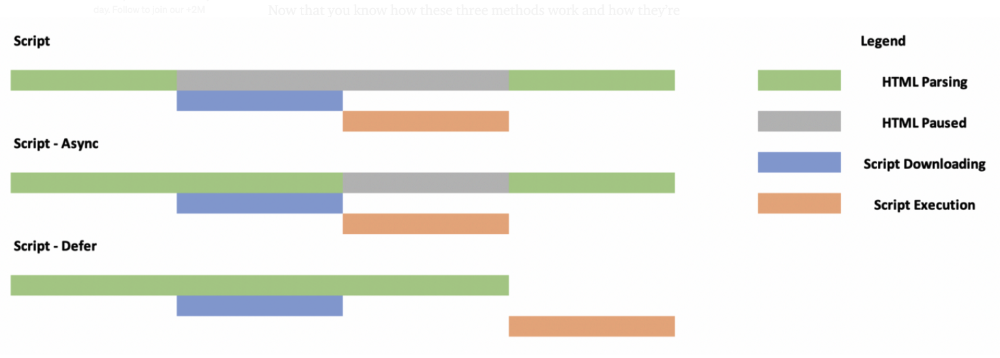

Javascript

HTML
We use it to create the structure of the page and add content.

CSS
We use it to style the content.
Javascript
We use it to add dynamic functionality interactivity.

What is Javascript?
- Javascript is the programming language of the web.
- It is also called Vanilla Javascript.
- It was created in 1995 to provide some interaction and load dynamic content in the browser.
- At the beginning, it used to run only in the browser, but it has evolved that now it can run in both the browser and the server.
- Today, Javascript can be used to create not only websites, but also full web applications with complex functionality, mobile and smartwatch applications and can be combined with many other languages.
- Javascript is not related in any way to the Java programming language.
- Javascript doesn't need to be compiled (translated from human-readable to machine code).
What does Javascript do?
- It detects user interaction and provides a response.
- It lets you create animations and interactive components.
- Javascript lets you alter the structure of your HTML and CSS using an API called the DOM.
And what do API and DOM mean?
- API stands for Application Programming Interface. It is sometimes called Web Services.
- The function of an API is to serve as a link between 2 applications so they can talk to each other.
- JavaScript when used on the frontend, interacts with browsers through a set of functions collectively known as Web APIs.
- DOM stands for Document Object Model and it's a representation of the HTML and CSS.
- On a website, the Javascript can interact with the HTML and CSS through the DOM.
The DOM (Document object Model)
- The "View Source" is the HTML before it's processed by the browser.
- The DOM is the representation of the page after all the css and javascript has been processed.
- Each HTML tag is an element. And each Element is a DOM node. Then the browser creates the node tree.
- The HTML does not change, but the DOM does.
Adding Javascript to your HTML file.
- Create a js folder on your project to store all your javascript files. Javascript files have the extension
.js. - In the HTML document, Javascript files can be added to the
headtag, or right before the closingbodytag, but depending on where you add them, you might have to usedefer / async. <script src="js./myjsFile.js">
Async, Defer or Nothing
Simple script tag
Added at the bottom, waits until all the HTML has been loaded.
Added on the head, it can stop loading the html until the script has been loaded.
Defer
Added on the head, waits until the HTML is loaded to execute the script. (preferred option).
Async
Added on the head, loads and executes scripts simultaneously. Recommended for when the scripts don't need the DOM.
Developing in Javascript.
Developing environment
- Since we are using Visual code, we need to install a couple of extensions:
- Prettier
- ESLint
- JavaScript (ES6) code snippets. Optional.
The Developer Tools Console
- In the browser we use the Developer tools Console.
cmd + opt + ion a Mac andctrl + shift + i- In the console you can write JavaScript and execute it the same way the browser’s JavaScript engine would if it lived in the page.
- To output something to the console from a script we use the
console.log('this is a console log')
Javascript Syntax
- Javascript is Case Sensitive. "myScript" is not the same as "MyScript" or "Myscript".
- For the most part, most build methods use camel case. "querySelector" or "getElementById"
- The semicolon
;indicates the end of a statement. Many people use it, but it's not really neccesary because Javascript will add it automatically through ASI (Automatic Semicolon Insertion). - White space, (tabs, spaces, empty lines) do not count in Javascript.
- Comments: Single Line comments are
// this is a single line comment - Multi line comments start with
/* Start and end with this */.
Data Types
In Javascript there are 7 basic Data types which are different ways in which data is classified to tell the computer how to interpret it. They are also called primitives, because they represent a primitive value, that is not an object and has no methods.
- Strings: They represent text data
"I'm a string"and they always go between quotations.- Single or double quotes? It does not matter as long as you are consistent and pair them correctly.
- And what about apostrophes? If you use double quotes, they don't represent a problem, but with single quotes you have to escape them.
'I\'m a string' - And quotes inside quotes? You have to escape it or use the other type of quote inside.
'This is a "quote"'or"This is a \"quote\""
- Numbers: Represent Numeric data. You can make math operations with numbers.
+Addition.-Subtraction.*Multiplication./Division.++Add one to a number.--Subtract one to a number.%Return the remainder after dividing 2 numbers.NaNmeans "Not-a-Number" and shows up when JS doesw not have a way to interpret that value as a number.
- Boolean: The keywords
trueorfalse.Usually used with if statement to make sure a contition is happening. Nullrepresents a Non-Value.Undefinedrepresents anything that has not beed defined by JavaScript or us.- Symbols: Introduced in 2015 with ES6, symbols are used to identify object properties.
- BigInt: Big Integrer and lets you create extremely large numbers that are not supported by the Number Data Type.
Variables
A variable is a container for a value that can be any kind of data (strings, numbers, elements from the DOM, functions).
- We can use variables in all or parts of our script.
- A variable must be declared before you can use it.
How do I declare a Variable?
- You declare a variable by assigning a value to it using the =
- We also declare variables using camel case
thisIsMyVariable. They should be one word and you can use - and _, and cannot start with a number. - They can use any word except for some Javascript reserved words.
- There are 2 main ways to declare a variable:
const a = 0let a = 0var a = 0
- Variables can only take one value each.
= and + in Javascript
In JavaScript these symbols have a slight different meaning depending on how they are used:
a = 1does not mean thatais equal to1, but thatahas been assigned the value of1.a == 1Means that I'm comparingato1and they are equal.4 + 7I'm adding4plus7because I'm dealing with 2 numbers."4" + 7does not give the same result because we are dealing with a string and a number. In this case the+is used to concatenate both elements.
const - let - var
We see variables declared using these 3 methods. What's the difference?
var
- This is the old way to declare a variable. It is not recommended to be used anymore, but you will still find it in a lot of components coded before 2015.
const
- Introduced in 2015 with ES6.
- Represents a variable whose value cannot be reassigned.
- const variables must be initialized at the declaration time.
let
- Introduced in 2015 with ES6.
- let allows you to reassign the value of a variable.
Which one is better?
Definitely don't use var. It is better to use const over let unless you know you need to reassign the value later.
The more control you have over your code, the lees chances of errors.